制作に入る前に知っておいてほしいこと
表現は複雑なものほど難しくなる
まず初めに概念として知っておいて欲しい事があります。
結論から言うと、
髪や衣装など、それが複雑なパーツであるほど表現が難しくなるがより立体的に、単純であるほど簡単だけど立体感が減ります。
ちゃんと制作に使える知識は教わるのではなく、実践で身に着けていく必要があります。
何もかも複雑・立体的であるほど良い訳でもありません。
あえて立体を削ったり、表現を圧縮したりすることが良い表現になる場合もあります。
一例を挙げましょう。
|
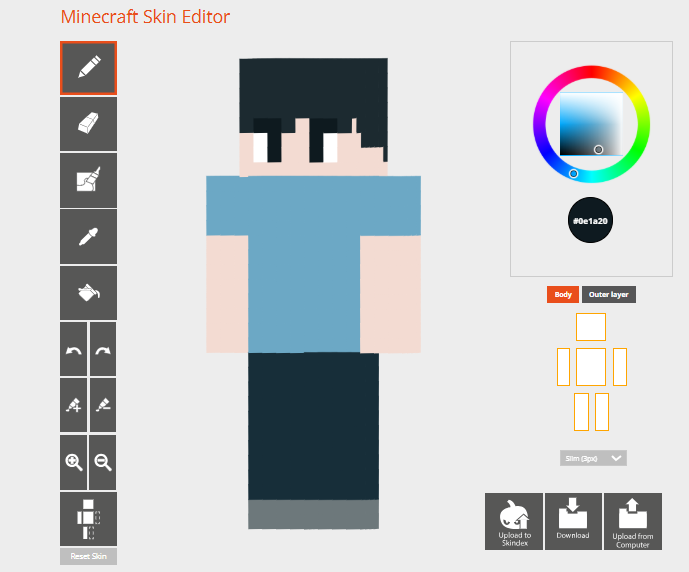 |
画像内のキャラクターは筆者が4分程度で作成しました。
各パーツの使った色の数は服・肌・髪や目など全てのパーツで1色。
アウターラインも未使用。
恐らく読者の皆様は『なんかのっぺりしていて、シンプルだなあ』という感想を抱くかもしれません。
衣装もTシャツとズボンだけの適当に描いた髪型で、どのパーツの色数も1つだけですから、表現としては最も単純な構造です。
さらに、ここで作品ヒストリーで展示したリメイク前の黄金の騎士(以下オパ子と呼びます)とオパ子(リメイク後)も比べてみましょう。
|
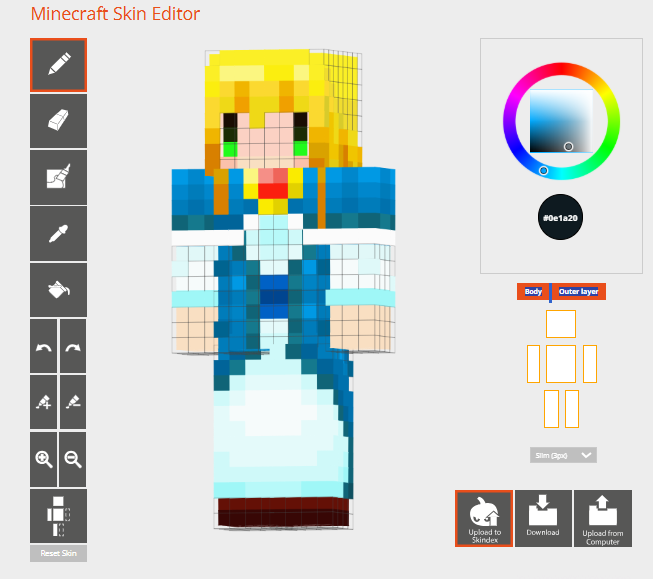 |
先ほどのキャラクターと比較すると、
・各パーツごとの使った色が増えてる。凡そ2～3色程度。明度しか変わってない部分があるせいでちょっとどんよりした部分がある。
・アウターラインによる髪やドレスのボリューム表現。でもちょっとゴツく見える。
等で良い意味でも悪い意味でもより印象のあるスキンになっているかと思います。
ここまでは未経験者の方でも何となく、ギリギリ理解しやすいのではないでしょうか。
|
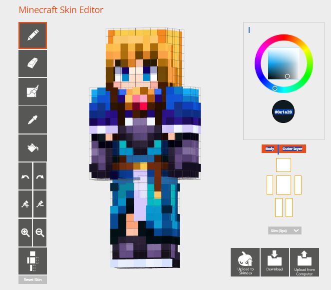 |
リメイク作品のオパ子。
・使用している色数は2～5色程度。ただそれよりも明度や彩度に、陰と光に分かれる箇所や輪郭部分に明確な明度や彩度の差があり、グラデーションの綺麗さや立体感を表現
・リメイク前もアウターラインによるマントやドレスの表現はあったが、リメイク前はやや無骨さ・硬さが残ってしまっていた。しかしリメイク後ではアウターラインによる表現をあえて抑える、つまり盛るのでなく削ることで立体感の表現を行い、よりゴツくない、女騎士らしい凛々しさを表現
読者の皆様は多分『いや何言ってるか分からん』という感想を抱くかもしれません。
『そうじゃないだろ、指摘させて貰うから』と反論出来る方がいらっしゃれば、その方は恐らく筆者より上のスキン制作の実力をお持ちかプロのクリエイターの方かどちらかでしょう。
まあつまり、複雑な表現を使い、理解して、それを言語化して説明しようとする。それが難解になっていく という事が起きてしまうから、より良いスキンを作るのも難しくなるわけですね。
クイズ出題
ここで少し問題を出してみましょう。
|
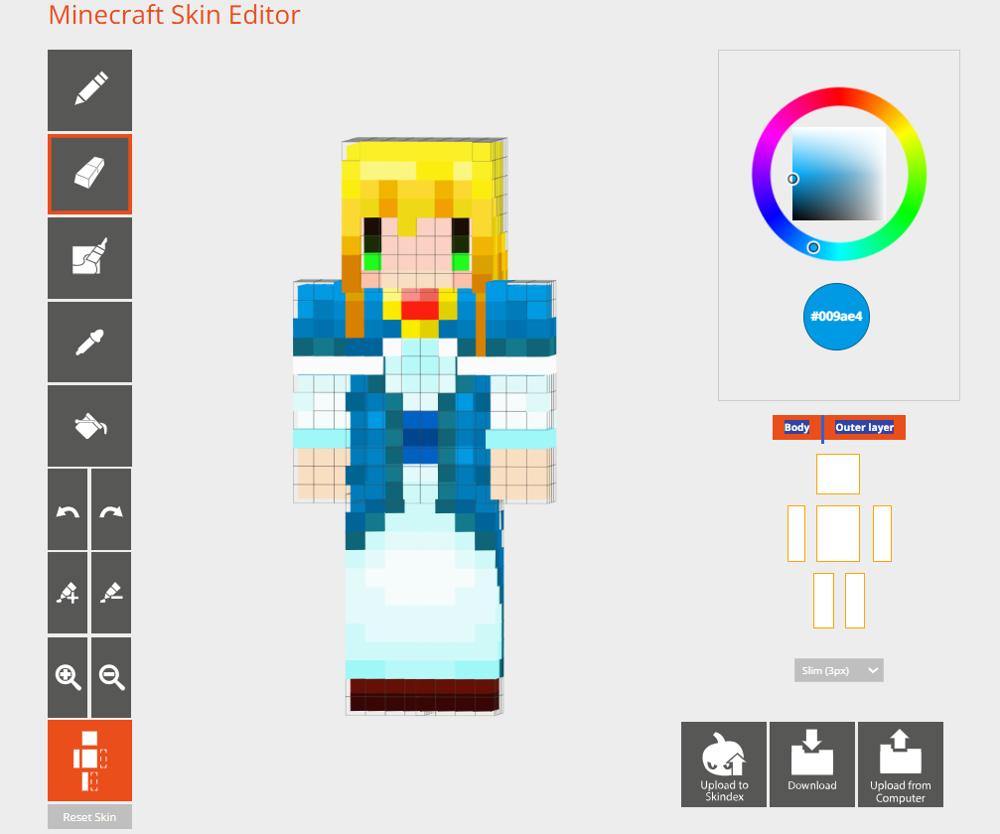 |
リメイク前のオパ子をほんの少しだけ修正しました。
どう修正したのか、10秒～30秒だけ考えてみて具体的に説明してみてください。
それにより何が起きたのかも説明出来れば100点満点中120点になります。
ヒント1
キーワードは『削り』です。
ヒント2
修正前と修正後をよく観察して、比べてみてください。
模範解答・解説
マント部分の角を削り取りました。
れによりドレスがよりスリムな印象に、少しだけゴツいというより凛々しいイメージに合った印象を表現しています。
アウターラインは立体表現には必須ですが、場合によってはこういった 『削る』ことも大事になります。
こういった知識・ノウハウを積み重ねることで、より豪華なスキンを制作することが出来るようになります。
色にかかわる知識
ここでまたクイズを出題します。多分そんなに難しくないのでご安心を。
|
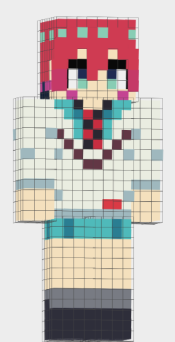 |
『機動戦士Gundam GQuuuuuuX』よりアマテ・ユズリハことマチュ。
しかし、どこかこのマチュに違和感を感じるのではないでしょうか。
どこがどう良くないのか、何が起きているのか15～30秒考えて具体的に説明してみてください。
ヒント
キーワードは「肌」です。
模範解答・解説
マチュの肌の色をちょっと汚くしてあります。具体的になぜ汚くなったのか説明します。
実際にスポイトして、加筆前と後の肌の色を確認してみましょう。
|
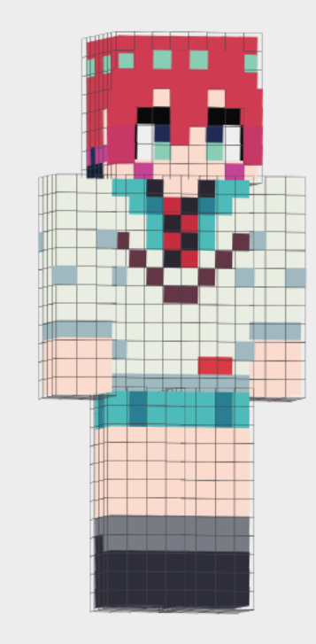 |
比較してみるとかなり分かりやすく下の方が綺麗な肌に見えるかと思います。
さらに、ここでそれぞれの肌の色もスポイトして確認してみましょう。
|
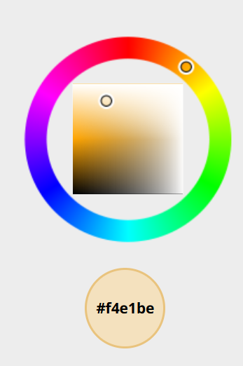 |
今回のクイズで出したマチュの肌で使った色です。
あまり良い肌として表現出来ない色の特徴として
・色がピンクでなく黄色・オレンジに寄りすぎてる
・陰と光のコントラスト差が小さく、彩度が落ちてる
などがあります。
|
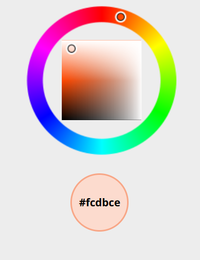 |
元のマチュ(後に資料配布)の肌の色。
肌が汚くなってしまう場合は気持ち色を赤寄りにしてみてください。
表現知識
「知識は実践で身につけるもの」という内容を踏まえた上で、すぐに真似できる知識と一部資料を紹介します。
培った知識に応用を利かせる事が出来るようになれば、だいたい何でも表現出来ます。
目だけ紹介
目はスキン制作において比較的簡単な部位ですので、真似だけでも大体なんとかなります。
ロボットの様な人外系を除けばほとんど3つのパターンを真似して頂ければ表現できます。
|
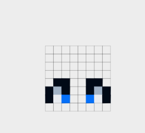 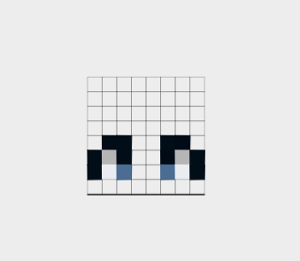 |
基本の女性目。
女の子～中性的なキャラクターに使われている事が多くあります。
|
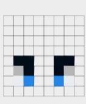 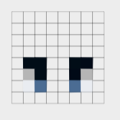 |
男性目。
少年～青年系キャラクター向けの表現です。
|
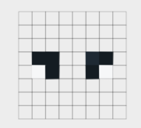 |
小さい目。
FPS系のようなリアル調のキャラクターや渋い大人キャラ向けです。
資料集
目以外は応用だらけの難しいパーツばかりです。パーツやここで紹介する知識の暗記だけでは対応できません。
ここでは少しの資料と再現するためのヒントにだけ載せておきます。
是非ご自身でも研究してみてください。
|
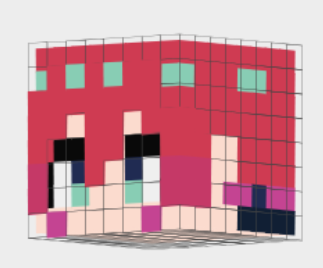 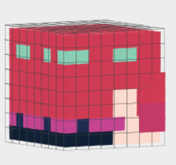 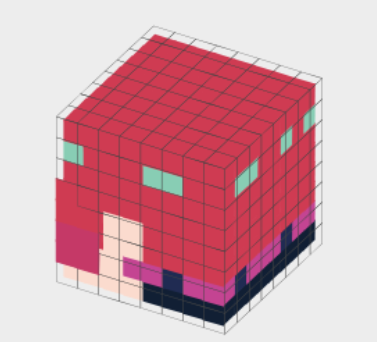 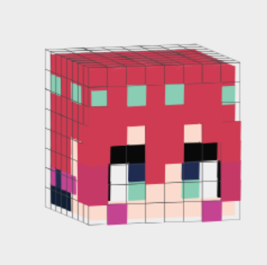 |
アマテ・ユズリハこと、マチュのスキン。
シンプル寄りの色合いで作っており、マチュ自体も服装や髪型のデザインが簡単な方です。
マチュは次回初心者向けの教材として作り方を解説します。
再現のためのヒント
入門者の方の作品の多い失敗のひとつに『色が曇っている』があります。これは肌以外でもありがちですね。
原因は大体明度でしか色が変わっていないから。明度だけ調節する場合、綺麗な影にするのはなかなか難しいです。
ヒント2(スキン配布・使用用途自由)
参考資料用。
今後他にも配布することになるでしょうが、もしお眼鏡にかなえばマイクラ内で使って頂いても構いません。
※著作権は放棄していませんので自作発言等はNGです。ご注意ください。

|
|
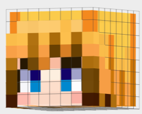 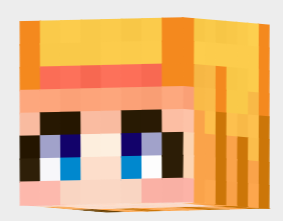 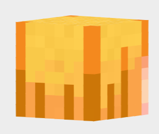 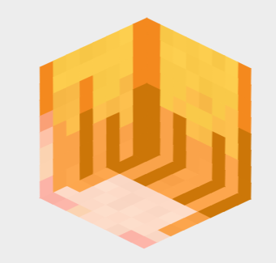 |
オパ子。再現難易度は初心者の方にとってはかなり高めですが、挑戦してみたいという方がいれば。
再現のためのヒント1
髪以外でも通用しますが、模写をしてみてください。ドット絵なので通常のイラストと比較すれば簡単です。
色をスポイトして、実際に使い、再現しましょう。
『ただスポイトしただけ』でなく、仕組みや傾向を分析出来れば素晴らしいです。
ヒント2
顔部分と前髪は6:4程度の比率になります。
髪の毛パーツにおいてのアウターラインの役割は『 前髪』がメイン。
後は髪型や長さによって扱いが変化します。
ヒント3(スキン配布・使用用途自由)
参考資料用。お眼鏡にかなえば使って頂いてもOK。
※著作権は放棄していませんので自作発言等はNGです。ご注意ください。
|
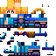 |
まとめ
今回の講座で実践前に知っておいてほしい事は大体話しました。
一番伝えたいのは『知識を実践で積み重ねることが大事』という事です。
ご自身でもいろいろ作るなり、こちらの制作課題にチャレンジするなりで場数を踏み続けてください。